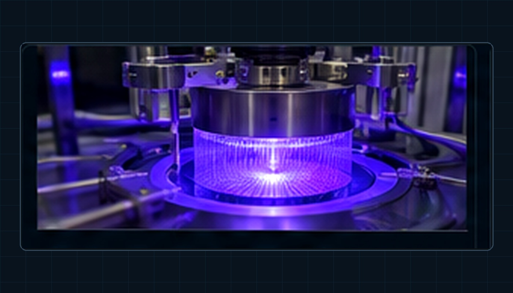

IN PROGRESS · MACHINE LEARNING
Semiconductor Tool Health & Fault Detection
An exploratory machine-learning project using multivariate process data from the Lam 9600 metal etch dataset.

Project objective
Investigate whether process-variable patterns can support interpretable equipment-health monitoring and fault detection.
Dataset
Lam 9600 Metal Etch MACHINE_Data.mat with 21 process variables across normal and fault wafers.
Current status
Data loaded and explored; variables and wafer sequence lengths reviewed; missing-value checks completed. Feature engineering, segmentation and baseline modelling are still in progress.
Planned outputs
- Data-cleaning and segmentation rationale
- Feature engineering
- Baseline models
- Model evaluation and interpretation
Results
Results and figures will be added as the project develops.